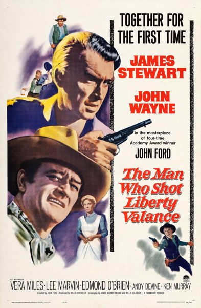

The Man Who Shot Liberty Valance

Starring: James Stewart, John Wayne, Vera Miles
Director: John Ford
Writer: Willis Goldbeck
Producer: Willis Goldbeck
The Man Who Shot Liberty Valance () is a 1962 black and white American Western film directed by John Ford and starring John Wayne and James Stewart in their first film together. The screenplay by James Warner Bellah and Willis Goldbeck was adapted from a 1949 short story written by Dorothy M. Johnson.
Trivia
- Nominated for: Academy Award for Best Costume Design, Black-and-White.
- Based on The Man Who Shot Liberty Valance (1949 short story by Dorothy M. Johnson).
- Many stories and speculations exist to explain this decision.
- Ford preferred that medium over color: "In black and white, you've got to be very careful.
- You've got to know your job, lay your shadows in properly, get your perspective right, but in color, there it is," he said.
Filming Locations
- Los Angeles
- Paramount Stage 1
- In contrast to prior John Ford Westerns, such as The Searchers (1956) and She Wore a Yellow Ribbon (1949), The Man Who Shot Liberty Valance was shot in black-and-white on Paramount's soundstages.
- "Jimmy Stewart had most of the sides [sequences with dialogue], but Wayne was the central character, the motivation for the whole thing." Parts of the film were shot in Wildwood Regional Park in Thousand Oaks, California.
Previous Showings
4 Runs • 3 Festivals
All runs on record (4):
- January 26 - 27, 1994
- May 22 - 24, 2009John Waynew/ Rio Bravo
- June 28 - 30, 2019James Stewart Festivalw/ The Far Country
- December 13 - 14, 2025Classic Westernsw/ One-Eyed Jacks